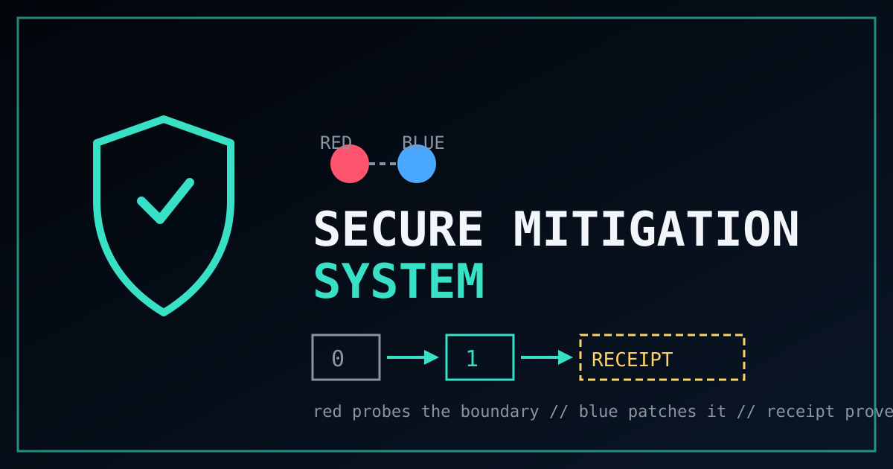

SECURE MITIGATION SYSTEM
no target // standby
PHASE 00 // STANDBY
Pick a target to wake the swarm.
- Nodes
- 0
- Messages
- 0
- Findings
- 0
- Patches
- 0
- Verified
- 0
Verdict
Boundary verified
- Pre-patch probe
- —
- Post-patch probe
- —
- Regression
- —
- Receipt
- —

no target // standby
PHASE 00 // STANDBY
Verdict